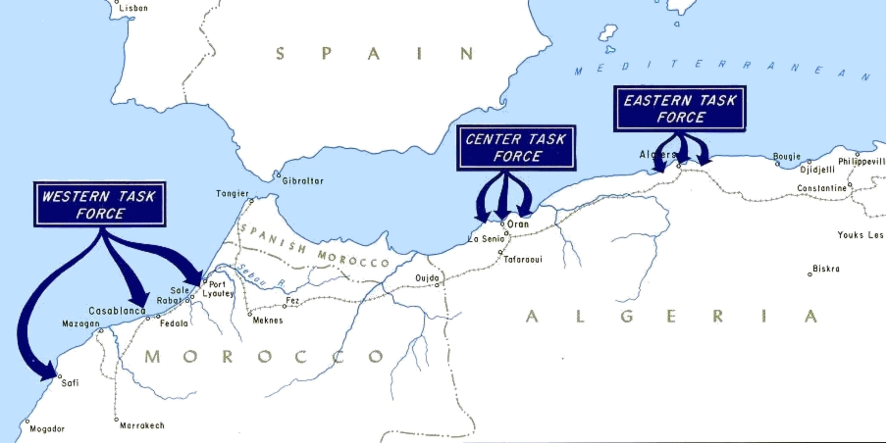
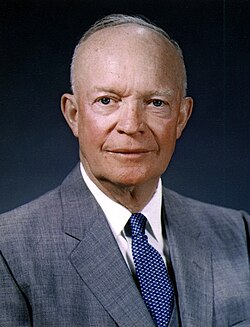
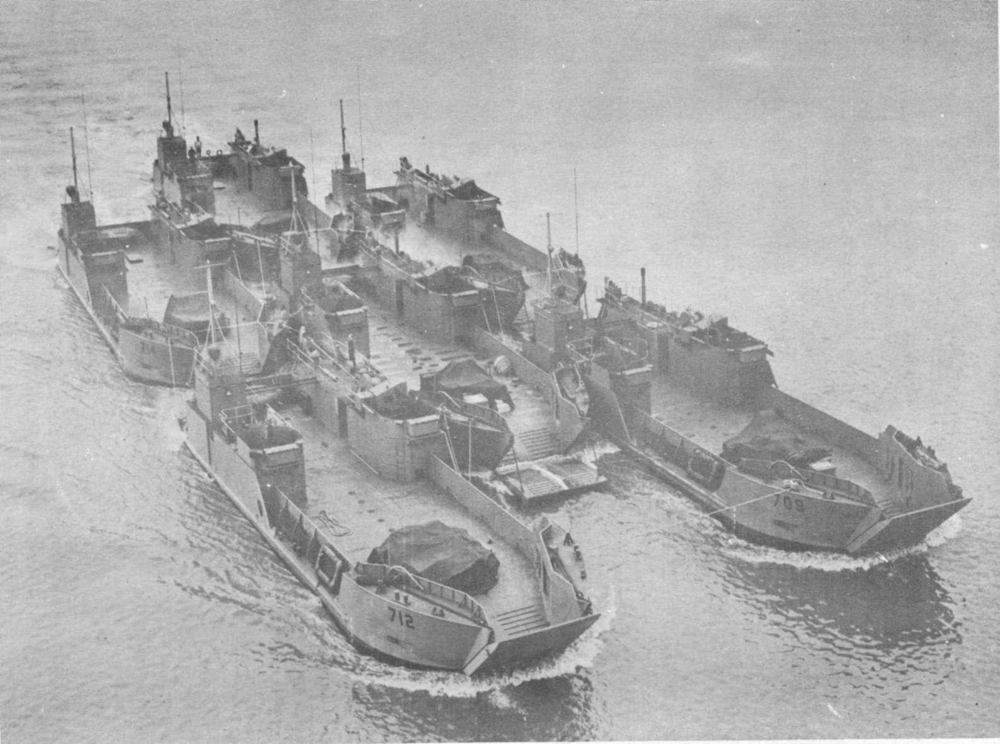
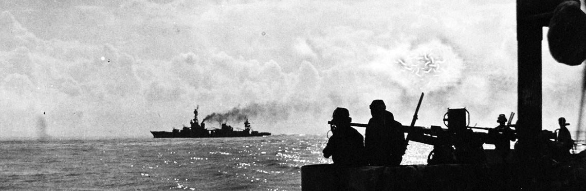
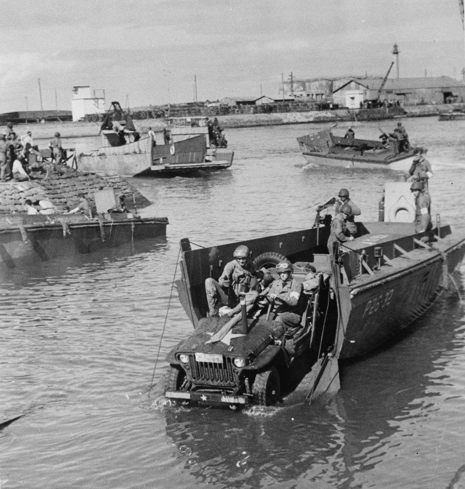

The collection
People, places
and the landing.
Each image offers a different angle on the Allied invasion, from command decisions and naval power to the soldiers who came ashore at Morocco and Algeria.

Operation Torch
A visual introduction to the Allied campaign in French North Africa and the western Mediterranean.

The North African map
The geography of the landings and the three main approaches toward Casablanca, Oran and Algiers.

Three task forces
The Western, Centre and Eastern task forces were assigned to land simultaneously across the coast.

Dwight D. Eisenhower
As overall Allied commander, Eisenhower coordinated the invasion from the headquarters in Gibraltar.

George S. Patton
Patton led the American Western Task Force toward Casablanca, the largest of the three landing areas.

Lloyd Fredendall
Fredendall commanded the Central Task Force during the landings around Oran.

Kenneth Anderson
Anderson led the Eastern Task Force toward Algiers and later directed the advance toward Tunisia.

François Darlan
The senior Vichy French commander became a key figure in the negotiations that ended the fighting.

The Allied naval fleet
Ships and escorts carried the invasion force across the Mediterranean and Atlantic approaches toward the landing zones.

USS Wichita
The heavy cruiser took part in the naval fighting around Casablanca during the opening days.

Landing near Casablanca
American troops came ashore along the Moroccan coast as the Western Task Force began its advance.

Arzew, Algeria
The eastern side of the Oran operation brought Allied troops ashore at the port of Arzew.

Heading for the beaches
American soldiers travel toward the Oran beaches in a landing craft during the first hours of the operation.

Keeping the advance moving
Landing craft delivered vehicles, equipment and supplies needed to turn a beachhead into a fighting front.

Vehicles ashore
A US jeep arrives at Fedala Harbor, showing the practical work of building an operational base.

American paratroopers
Operation Torch included the first large-scale American airborne operation of the Second World War.